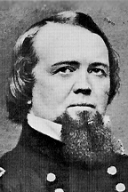

|

|

|
|
|
John Pope was born on March 16, 1822, in Louisville,
Kentucky. He graduated from West Point in 1842, and
performed survey work in the topographical engineers in
Florida and along the northeastern boundary of the United
States and Canada. Pope won two brevets with Zachary
Taylor's army in the Mexican War, then performed army survey
work in Minnesota, route surveys for a transcontinental
railroad, and lighthouse construction. After serving as a
mustering officer in Chicago from mid-April through most of
July 1861, he was named major general of Volunteers. In
command of the Federal Army of the Mississippi, Pope,
skillfully employing artillery and engineering tactics,
captured New Madrid and Island No. 10, thereby opening the
Mississippi to a point near Memphis. These capable
operations were marred when he asserted that he had captured
ten times as many prisoners as he had actually taken.
The imposing and overconfident Pope came east in the
summer of 1862 to command the Union Army of Virginia.
Handicapped by his own prevarications and bluster, and by
deprecations he heaped upon his own soldiers, he
incautiously advanced against the Confederates, only to be
outgeneraled by Robert E. Lee, James Longstreet, and
Stonewall Jackson and decisively defeated at Bull Run in
August 1862. Throughout the campaign, Pope seldom could
locate the Southern forces, and often he did not know where
his own troops were. Although outnumbering the enemy 70,000
to 55,000, his forces suffered some 17,000 casualties.
Blaming others--such as George B. McClellan, Henry W.
Halleck, and Abraham Lincoln--for his own blunders, Pope was
relieved of his command on September 5, 1862, and sent to
Minnesota to ride herd on the Indians. Later, based at Fort
Leavenworth, Kansas, he ably campaigned against the Indians
and aided in opening the West for settlement.
Although Pope's operations in the Mississippi Valley
early in the Civil War were ably conducted, his venomous
public relations, lackluster intelligence system, and
bungling command at Second Bull Run overshadowed these
earlier accomplishments, as did his carping criticisms of
others. But in the post-Appomattox years, his grasp of
realities of Indian problems, and his almost intuitive
appreciation of the relationship of the Regular Army to the
people and nation as a whole, are worthy of commendation.
Pope was commander of several military departments before he
was retired from the Army on March 16, 1886. He died on
September 23, 1892, in Sandusky, Ohio.
Source: John T. Hubbell and James W. Geary,
Biographical Dictionary of the Union: Northern Leaders of
the Civil War (Westport, CT: Greenwood Publishing, 1995), 410.
|